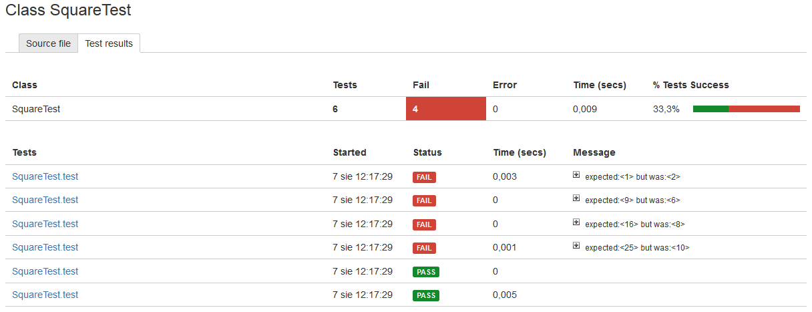
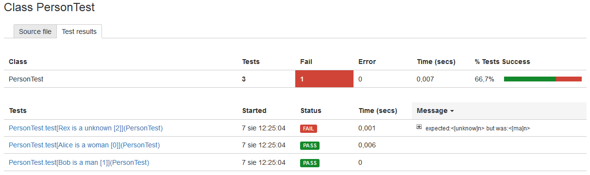

Introduction
JUnit4 framework version 4.10 has introduced a feature which allows to run the same test multiple times, using different data as input.
In order to use this, you have to:
- annotate test class with @RunWith(Parameterized.class)
- declare a data() method returning collection of input values and annotate this method with @Parameters annotation.
- declare a test method annotated with @Test
Furthermore, the JUnit version 4.11 has added a 'name' attribute to the @Parameters annotation - thanks to this, you can define a custom name for a test. You can use variables such as "{index}" for an iteration number and "{0}, {1}, ... " for N-th input argument in a test name.
For example:
@RunWith(Parameterized.class)
public class PersonTest {
@Parameterized.Parameters(name = "{0} is a {1} [{index}]")
public static Collection<Object[]> data() {
return Arrays.asList(new Object[][]{
{"Alice", "woman"}, {"Bob", "man"}, {"Rex", "unknown"}
});
}
protected String input;
protected String expected;
public PersonTest(String input, String expected) {
this.input = input;
this.expected = expected;
}
@Test
public void test() {
assertEquals(expected, new Person(input).getSex());
}
}
See more details on JUnit wiki page.
Integrating Clover
As such parametrized tests are being executed by JUnit's test runner, Clover has no problem with recording test results for them. However, till Clover 3.3.0 there's was no information about which test iteration has failed - all test iterations had the same same:

Clover 3.3.0 introduced a JUnitTestRunnerInterceptor, which can be attached to JUnit's runner. It "listens" which test is being executed and what runtime name it has (evaluated by JUnit). Thanks to this, you can see an iteration number:

as well as full test names (@Parameters(name=...)) in the reports:

Integrating with Ant
Unfortunately, neither Ant's <junit> task nor JUnit itself (via command line argument) has a way to attach test listeners. It must be done programmatically. You have to instantiate a JUnitCore, add Clover's JUnitTestRunnerInterceptor to it and call core.run() method passing test class(es) as an argument.
Example:
import org.junit.runner.JUnitCore;
import com.atlassian.clover.recorder.junit.JUnitTestRunnerInterceptor;
public class RunJUnit4WithClover {
public static void main(String[] args) {
JUnitCore core= new JUnitCore();
core.addListener(new JUnitTestRunnerInterceptor());
core.run(SquareTest.class);
}
}
As soon as test execution is finished you can generate a Clover report.
LIMITATION
Clover's JUnitTestRunnerInterceptor can correctly handle parameterized test names when test methods from a single test case class are executed sequentially. It means that you shall not use a test runner which will run all iterations in parallel.
On the other hand, running entire test cases or test suites in parallel is allowed.
Integrating with Maven
See Running JUnit4 Parameterized tests with Surefire.
References
- https://github.com/junit-team/junit/wiki/Parameterized-tests
- https://github.com/openclover/clover-examples parameterized-junit4-example